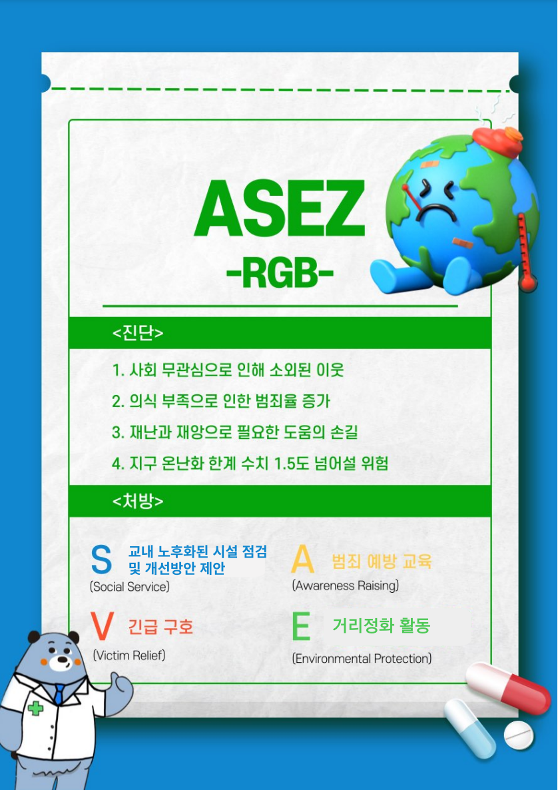

종교 활동이 좋은 어스인
▶ 네비게이토 ◀
#주님의 사랑을 전하는 네비게이토 동아리 알림제
#축구, 농구로 팀웍과 건강을 네비게이토와 함께
#성경 암송으로 은혜 충만한 네비게이토
#연극, 합창, 운동회 등 다양한 활동을 경험하는 네비게이토
#여름엔 바다로, 겨울엔 에버랜드로 함께 떠나는 네비게이토
#네비게이토의 성탄 감사 모임
▶ CCC ◀
캠퍼스 복음화를 위한 선교활동
▶ UBF ◀
1대 1 성경 공부로 그리스도의 복음을 전하며, 말씀안에서 새 삶을 얻고 캠퍼스 복음화를 양하는 학생 모임
▶ JOY선교회 ◀
🤍JOY(죠이선교회)를 소개합니다🤍
죠이(JOY)란?
JOY는 Jesus first, Others second, You third의 약자로 “예수님을 첫째로 이웃을 둘째로 나 자신을 마지막에 둘 때 참 기쁨(JOY)이 있다" 라는 JOY spirit을 중심으로 활동하고 있는 기독교 동아리입니다.
진리와 사랑이신 예수님을 인격적으로 알아가고, 그 사랑으로 서로 사랑하기위함 모임으로 서로 사랑함을 통해 우리의 마음에 참 기쁨를 발견할 수 있는 JOYful한 공동체입니다~
함께하고 싶으신 단국대 학생 모두 환영합니다!!
1. 건강한 공동체
죠이(JOY)는 학원복음화협의회와 단국기독학생연합회(단기연)에 소속된 정식동아리입니다.
2. 전국연합 & 서울 남지부 소속 단국JOY
죠이(JOY)는 전국에 10개 지부, 50개의 캠퍼스에 있는 연합 동아리이며 단국대(죽전)는 가천대, 동국대,명지대, 서울대, 숙명여대, 숭실대, 숭의여대, 안양대, 중앙대와 함께 서울 남지부에 소속되 어 있습니다.
방학 중에는 남지부 연합으로, 학기중에는 단국대 단독으로 모입니다!
3. 24년도 1학기 활동
[정기모임]
🤍 매주 목요일 저녁 7시~9시
🤍 혜당관 307호 (죠이 동아리방)
시험기간 전 2주를 제외한 매주 진행됩니다.
DTC (제자양육훈련)
✔️[왕의 십자가_팀켈러]
이번학기에는 신앙서적 [왕의 십자가]로 진행됩니다. 이를 통해 예수님을 알아가고 서로의 이야기를 들으며 예수님에 대해, 우리의 삶에대해 함께 묵상하려고 합니다
이외에도 MT, 아웃팅(서울 시내, 한강, 벚꽃축제, 단풍 놀이, 맛집 탐방, 캠퍼스 투어 등등),여름&겨울 수양회, 해외선교 등 다양한 활동이 있습니다!
회장 김하중 010 7331 7940 (파이버19)
간사 이준영 010 4164 2737
▶ 가톨릭학생회 ◀
🌸 단국대학교 죽전캠퍼스 가톨릭학생회 아뉴스입니다❗ 🌸
아뉴스는 단국대학교 죽전캠퍼스의 종교분과 소속 중앙동아리로,
1967년 동아리 창설 이래 59년째 전통을 이어가고 있습니다!
💕 동아리 소개
정기적인 미사와 더불어 수녀님과 함께하는 주모임을 가집니다.
가톨릭 성월에 맞는 부활절과 성탄절 행사 등 동아리만의 특색있는 활동도 진행합니다.
수녀원 방문, 성지순례 등 외부 활동 역시 활발히 이뤄지고 있습니다!
종교 상관없이 누구든지 환영합니다!
💕문의❓
회장: 채해온 안드레아 (010-3045-2429)
동아리 방: 혜당관 402호
언제든지 부담 없이 연락 또는 방문하면 됩니다 :D
3. 24년도 1학기 활동
[정기모임]
🤍 매주 목요일 저녁 7시~9시
🤍 혜당관 307호 (죠이 동아리방)
시험기간 전 2주를 제외한 매주 진행됩니다.
▶ ASEZ_RGB (가등록 동아리) ◀
